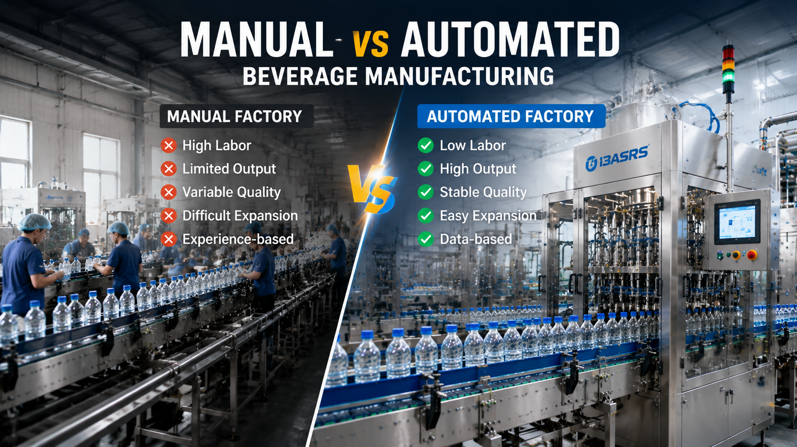

Manual vs Automated Beverage Manufacturing: Which Production Model Wins ?

Summary
For decades, beverage manufacturers competed through low labor costs and traditional production methods.
However, the global manufacturing environment is changing.
Rising labor costs, increasing quality requirements, stricter food safety standards, and faster market demand are forcing beverage companies to rethink their production models.
The question is no longer:
"Can workers produce beverages manually?"
The real question is:
"Can traditional production methods compete with automated factories in the future?"
Modern beverage manufacturers are increasingly adopting:
Automated bottling lines
Integrated production systems
Smart factory management
Digital quality control
Automated logistics
This article compares manual beverage manufacturing and automated beverage production models from a business perspective, including:
Labor cost
Production efficiency
Product quality
Expansion capability
Factory management
Long-term competitiveness
The goal is not to replace people with machines, but to help manufacturers build more efficient, reliable, and scalable production systems.
Technology
- Beverage Factory Automation Technology
- A modern automated beverage factory combines multiple technologies to create a continuous manufacturing ecosystem.
- 1. Automated Bottling Line
- A complete automated bottling line can integrate:
- Bottle manufacturing
- Filling
- Capping
- Labeling
- Packaging
- The production process becomes a continuous workflow instead of separated manual operations.
- 2. Industrial Automation Control
- Modern systems use:
- PLC control
- HMI operation
- Sensors
- Production monitoring systems to maintain stable operation.
- 3. Smart Manufacturing Technology
- Advanced beverage factories can integrate:
- MES systems
- Production data collection
- Quality tracking
- Digital management
- This allows factory managers to understand production performance in real time.
- 4. Automated Material Handling
- Modern factories increasingly connect production with:
- Conveyor systems
- Robotic palletizing
- AGV transportation
- ASRS warehouses
- creating a complete smart manufacturing environment.
Challenge
Why Traditional Beverage Manufacturing Models Are Facing Pressure
Manual production has played an important role in beverage manufacturing for many years.
Many factories started with:
Human operators
Independent machines
Manual material handling
Experience-based management
This model can work for small-scale production.
However, as beverage companies grow, several challenges appear.
Challenge 1: Rising Labor Costs
Manufacturers worldwide are experiencing:
Increasing wages
Worker shortages
Difficulty recruiting skilled operators
Labor-intensive production becomes more expensive every year.
Challenge 2: Limited Production Capacity
Manual operations create bottlenecks.
Production speed depends on:
Worker efficiency
Shift management
Human coordination
Increasing output often requires adding more workers.
Challenge 3: Quality Consistency
Human operation may create variations in:
Filling accuracy
Packaging quality
Production process control
For beverage companies, consistency is critical.
Challenge 4: Difficult Factory Expansion
Traditional factories often struggle when demand increases.
Problems include:
Limited production space
More workers needed
Complex management
Scaling production becomes difficult.
Challenge 5: Lack of Production Data
Traditional factories often depend on:
Operator experience
Manual reporting
Human judgment
This makes it difficult to optimize production scientifically.
Solution
Automated Beverage Manufacturing: Building the Factory of the Future
Automation does not mean removing human expertise.
It means allowing people to focus on:
Production management
Process optimization
Quality improvement
while machines handle repetitive operations.
1. Labor Efficiency
Manual Production
Requires more workers for:
Material movement
Machine operation
Packaging
Inspection
Automated Production
Automation reduces repetitive work through:
Automatic feeding
Automatic filling
Automatic packaging
Automated logistics
Result:Lower labor dependency.
2. Production Output
Manual Factory
Capacity is limited by:
Worker availability
Operating speed
Human fatigue
Automated Factory
Provides:
Continuous operation
Stable production speed
Higher utilization
3. Quality Stability
Manual Production
Quality depends heavily on:
Operator experience
Human attention
Automated Production
Automation provides:
Accurate control
Standardized processes
Better repeatability
4. Factory Expansion
Manual Model
Increasing capacity usually means:
More workers
More production space
Automated Model
Expansion can be achieved through:
Additional production modules
Higher-speed equipment
Digital optimization
5. Management Capability
Manual Factory
Management relies on:
Experience
Manual records
Smart Automated Factory
Management uses:
Production data
Equipment monitoring
Digital analysis
Workflow & Layout
Traditional Beverage Factory Workflow
Raw Material
↓
Manual Operation
↓
Independent Equipment
↓
Manual Transfer
↓
Filling
↓
Packaging
↓
Finished Product
Automated Beverage Factory Workflow
Raw Material
↓
Automated Processing
↓
Bottle Production
↓
Filling
↓
Capping
↓
Labeling
↓
Packaging
↓
Automatic Logistics
↓
Smart Warehouse
↓
Distribution
Factory Layout Difference
Traditional Layout
Requires:
More manual transportation routes
More buffer storage
More operating space
Automated Layout
Provides:
Shorter material flow
Better space utilization
Higher production efficiency
Results & ROI
- Why Automation Creates Better Long-Term Returns
- Automation requires investment.
- However
- the evaluation should focus on total business value.
- 1. Labor Cost Reduction
- Automation reduces dependence on:
- Production workers
- Packaging workers
- Material handlers
- Long-term operating costs become more predictable.
- 2. Higher Production Capacity
- Automated systems improve:
- Production speed
- Equipment utilization
- Output stability
- 3. Reduced Quality Loss
- Automation helps reduce:
- Product defects
- Rework
- Material waste
- 4. Better Factory Management
- Digital systems provide:
- Production information
- Equipment status
- Quality records
- Managers can make decisions based on data.
- 5. Improved Business Scalability
- Automated factories are easier to expand when:
- Market demand increases
- New products are introduced
- Production requirements change
- Example ROI Thinking
- A factory invests in automation.
- Initial cost:
- Higher equipment investment.
- Long-term return:
- Lower labor cost
- Higher output
- Better quality
- Reduced waste
- Improved competitiveness
Equipment List
- A modern automated beverage factory may include:
- 📌 Production Equipment
- Bottle blowing machine
- Filling machine
- Capping machine
- Labeling machine
- Packaging machine
- 📌 Automation Equipment
- PLC control system
- Sensors
- Industrial robots
- Conveyor systems
- 📌 Logistics Automation
- Automatic palletizing system
- AGV transportation
- ASRS warehouse system
- 📌 Digital Factory Systems
- MES system
- Production monitoring
- Quality tracking system
Project Overview / Opening
The Future of Beverage Manufacturing Is Automated Efficiency
The beverage industry is entering a new manufacturing era.
In the past, competitive advantage came from:
Cheap labor
Manual operation
Low equipment investment
Today, competition is shifting toward:
Production efficiency
Quality consistency
Manufacturing flexibility
Digital management
Automation is becoming not only a technology choice but also a business strategy.
For beverage companies planning future growth, the question is not whether automation will happen.
The question is:
How early should manufacturers prepare for it?
Key Points
- Five Reasons Beverage Factories Are Moving Toward Automation
- 1. Labor Challenges
- Reduce dependence on increasingly expensive labor resources.
- 2. Higher Production Demand
- Meet growing market requirements with stable output.
- 3. Better Quality Control
- Create consistent products through standardized processes.
- 4. Easier Factory Expansion
- Build production systems that can scale.
- 5. Data-Driven Management
- Transform factory operation from experience-based to intelligent management.
Implementation / Workflow
How to Upgrade From Manual Production to Automation
Step 1: Analyze Current Production
Evaluate:
Existing equipment
Labor usage
Production bottlenecks
Step 2: Identify Automation Opportunities
Possible upgrades:
Filling automation
Packaging automation
Material handling automation
Warehouse automation
Step 3: Design Production Solution
Develop:
Equipment configuration
Factory layout
Automation strategy
Step 4: Implement System Integration
Coordinate:
Equipment suppliers
Control systems
Production workflow
Step 5: Optimize Factory Operation
Use:
Production data
Performance analysis
Continuous improvement
Customer Value / Results
For beverage manufacturers, automation provides:
📌 Lower Operating Cost
Reduce long-term labor dependency.
📌 Higher Production Efficiency
Increase output without simply increasing workforce.
📌 Better Product Consistency
Maintain stable quality standards.
📌 Improved Factory Competitiveness
Respond faster to market changes.
📌 Future Manufacturing Capability
Prepare factories for:
Smart production
Digital management
Industry 4.0 development
Conclusion / Next Step
The competition in beverage manufacturing is changing.
Factories are no longer competing only through low labor costs. The future belongs to manufacturers who can achieve higher efficiency, better quality control, and smarter production management.
Automation is not simply replacing manual work. It is creating a more reliable and scalable manufacturing system.
We help manufacturers worldwide design, source, integrate, and deliver industrial automation projects from China's manufacturing ecosystem.
Our capabilities include:
Beverage production line automation
Automated bottling systems
Smart factory solutions
Packaging automation
Industrial robotics integration
Complete manufacturing project management
Whether you are upgrading an existing beverage factory or planning a new automated production facility, our team can help analyze your requirements and develop a suitable industrial automation solution.
📩 Contact us through our website Contact page to discuss your beverage factory automation project.
SEO Title
Manual vs Automated Beverage Manufacturing: Which Production Model Wins ?
SEO Description
For decades, beverage manufacturers competed through low labor costs and traditional production methods.
However, the global manufacturing environment is changing.
Rising labor costs, increasing quality requirements, stricter food safety standards, and faster market demand are forcing beverage companies to rethink their production models.
The question is no longer:
"Can workers produce beverages manually?"
The real question is:
"Can traditional production methods compete with automated factories in the future?"
Modern beverage manufacturers are increasingly adopting:
Automated bottling lines
Integrated production systems
Smart factory management
Digital quality control
Automated logistics
This article compares manual beverage manufacturing and automated beverage production models from a business perspective, including:
Labor cost
Production efficiency
Product quality
Expansion capability
Factory management
Long-term competitiveness
The goal is not to replace people with machines, but to help manufacturers build more efficient, reliable, and scalable production systems.
Related Blog
Start with Your Business Challenge
Tell us about your warehouse, factory, or production requirements. We'll help you explore practical automation solutions and relevant project references.